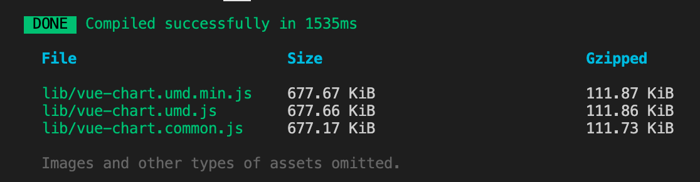
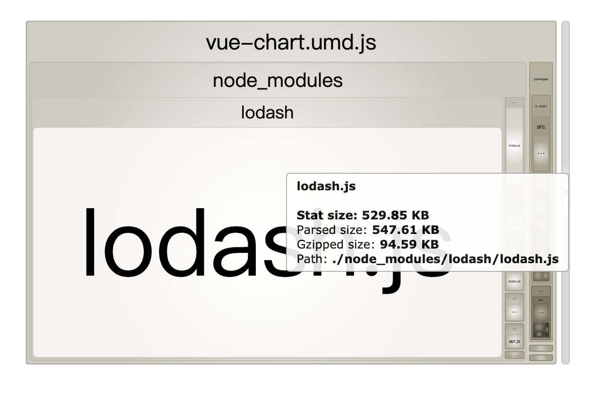
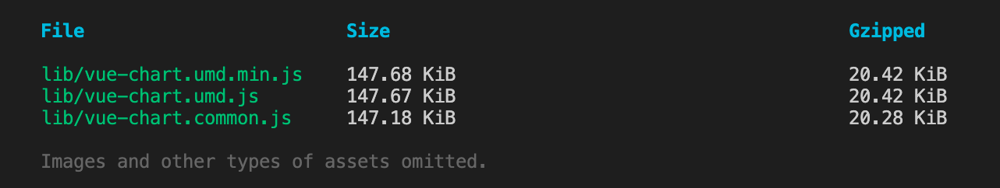
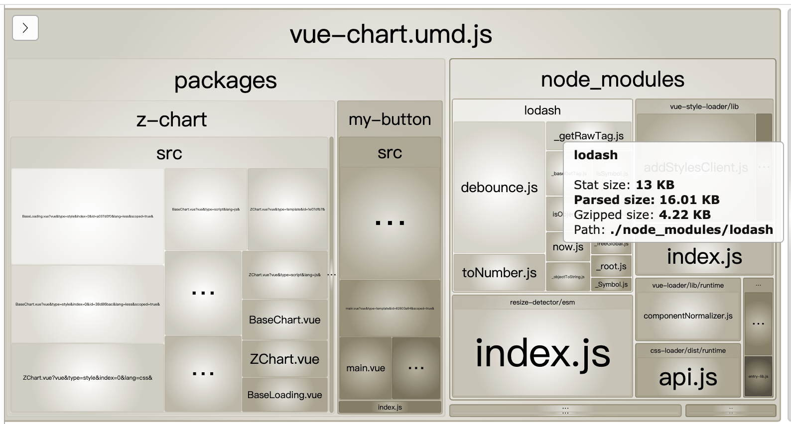

lodash.js 打包后默认是整包，怎么按需打包，减少包体积
这篇文章发布于 2020/11/30，归类于 前端工程化
标签：
loadsh按需打包，loadsh tree shaking，loadsh摇树
在 vue-cli 打包 lib 项目时，发现包体积较大有 600多KB，于是使用 -- report 参数看具体是哪个包较大，发现尽管只用到了 lodash 的一个函数，但打包体积却有几百k，如下图，应该是整包打的，没有按需打包。

# 以 src/index.js 为入口，以库的形式打包到lib目录下，并生成 report.html
vue-cli-service build --mode lib --target lib --dest lib --report src/index.js以下是 打开 lib/项目名.umd-report.html 后，显示的各模块大小示意图

这里借助 babel 的 loadsh 插件来进行按需打包。如果没有babel的配置文件，新建 .babelrc 文件，加入如下内容：
// .babelrc 使用 lodash 的babel插件
{
"plugins": ["lodash"]
}lodash 的 babel 插件就是 babel-plugin-lodash，需要先 npm 安装下
npm install babel-plugin-lodash -Dok后，重新打包，就是按需打包了。如下图，体积只有 100 多 KB 了。

再来看看 report 信息，可以看到，只打包了使用到的函数
